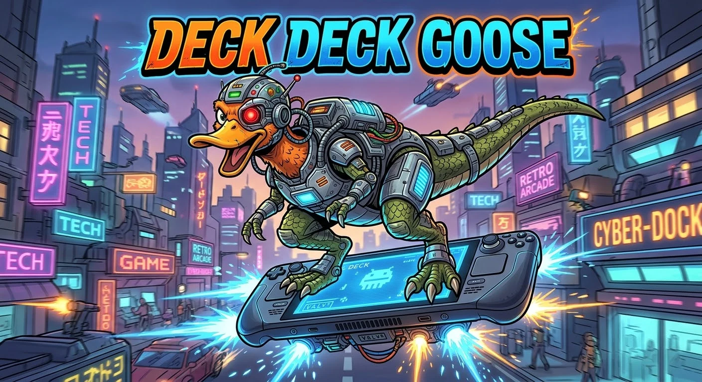
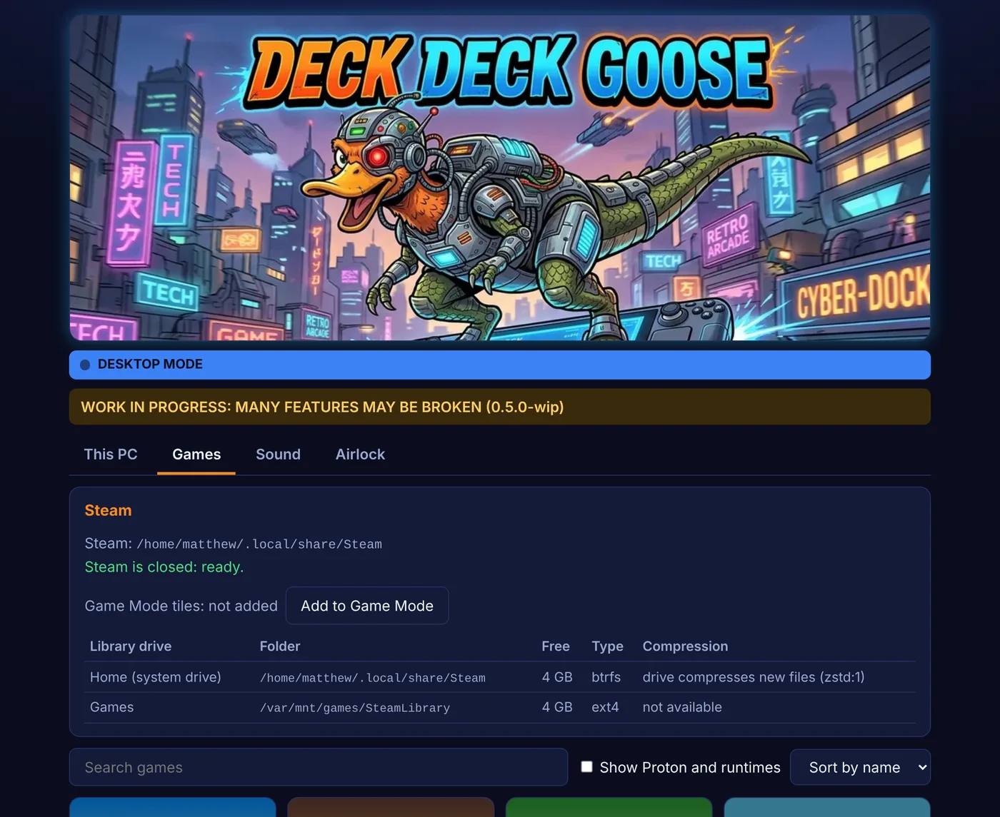
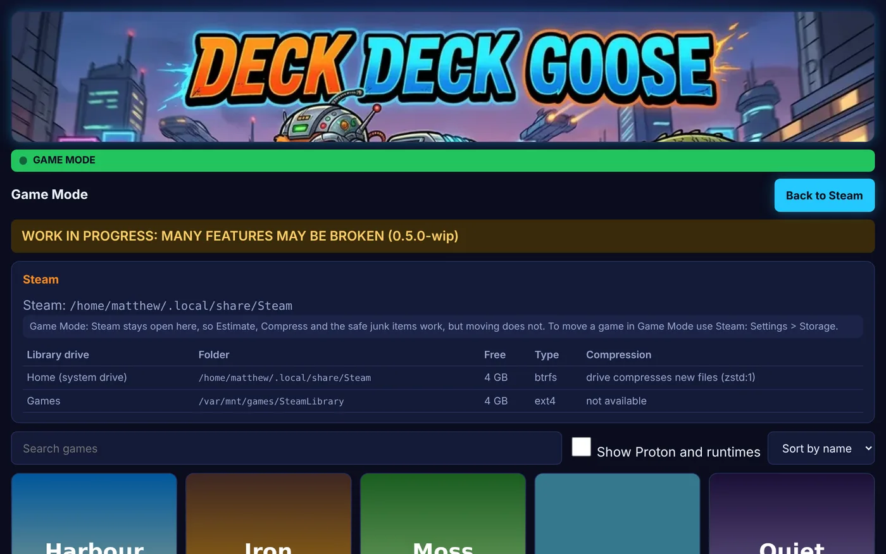
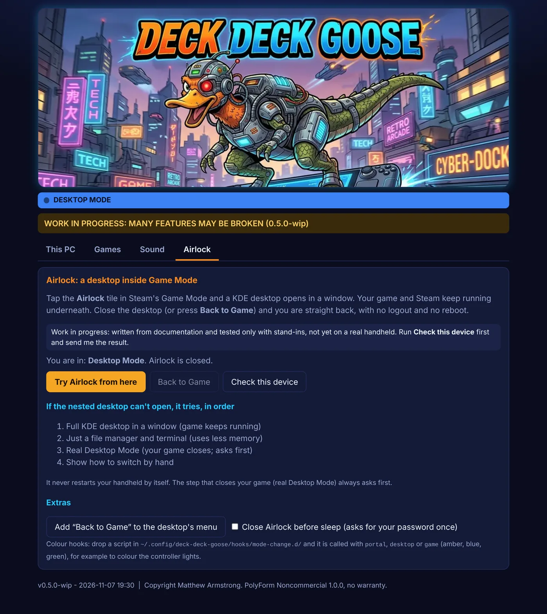

Deck Deck Goose
A normal-looking This PC folder for Linux file managers: your disks by name, Users, Documents, Downloads. Plus a Steam game manager: move games between drives, clear junk, compress. Made for Bazzite and Nobara, should work on Mint too. The Steam library manager also runs on Windows and macOS. Bundles Zombie-Deck, a wake-from-sleep fix for handhelds.
View on GitHubPDF manualReleases
What you get
Plain paths
Disks / Games, Users / you, Documents. No more digging through /var/home or /run/media.
Works with any file manager
It is just a folder of shortcuts, so a split-pane manager like Dolphin (F3) or Double Commander can open it.
Flatpak access
One tick lets a Flatpak file manager see your disks. Reversible.
Never touches the OS
The read-only system part of the disk is hidden and untouched. No sudo.
Move Steam games
Pick a drive: the game, its Proton saves and shader cache are copied, checked file by file, and Steam is told where it is.
Clear junk
Shader caches of uninstalled games, download leftovers, Steam's caches. Anything that could hold saves is never ticked for you.
Game Mode tile
One click adds Deck Deck Goose and Airlock to Steam, so the app opens full screen in Game Mode on a handheld.
Airlock
Tap a tile in Game Mode and a KDE desktop opens in a window while your game keeps running. Close it and you are back. Never reboots. Untested on real hardware.
Sound
Fixes the quiet ROG Ally speakers on Bazzite in one press, boosts the volume to 150% and picks the output, in Desktop and Game Mode.
On-screen keyboard
Installs if needed and turns on KDE's touch keyboard (Plasma Keyboard or Maliit) for Desktop Mode on Bazzite and Nobara KDE.
Estimate, then compress
On btrfs drives, a quick read-only estimate shows what a game would save. Compress then packs only the files that actually shrink, skipping videos, audio and archives.
In Game Mode

Airlock

Install
- Download the zip from the Releases page and unzip it.
- Double-click
DeckDeckGoose-Linux.shand choose Run. - Tick I understand, tick your Flatpak file managers, press Install / update, then Check.
What does not exist yet
- Testing on a real Bazzite, Nobara or Mint machine, with a real Steam client and real btrfs compression (so far: simulated data, plus one real cross-drive move test).
- Heroic, Lutris, GOG and Epic games.
- Instant refresh when a disk is plugged in (up to 30 seconds).
- Automatic setup of Double Commander or Krusader.
- Drive letters, and unlocking encrypted disks.